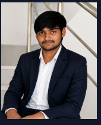

Programming
Python, Java, JavaScript, C
COMPUTER SCIENCE • AI • DEVELOPMENT
I'm Karthik Lakshman — a CSE student who learns by building. I work across AI, computer vision, web development and automation, turning ideas into real, usable projects.

01 / ABOUT
I don't want to only collect tutorials. I want to understand how things work by actually making them.
My work ranges from a full-stack volunteer management platform to computer-vision tools that let people interact with a computer using hand gestures or eye movement. I enjoy the messy middle — debugging, redesigning, testing and getting a project to a point where another person can actually use it.
02 / TOOLKIT
Python, Java, JavaScript, C
HTML5, CSS3, React, Vite, Tailwind CSS, responsive design
Flask, Node.js, Firebase, Firestore
AI/ML concepts, OpenCV, computer vision, DeepFace, OCR
MongoDB, SQL, Firestore, Excel, Google Sheets
Python automation, Playwright, browser workflows and form automation
03 / SELECTED WORK
A volunteer management platform for event organizers — handling events, volunteers, attendance, notifications and operational workflows.
Open repository ↗A food-image based carbon footprint project connecting image analysis with environmental impact estimation through a simple web workflow.
Open repository ↗Hands-free computer control using webcam-based hand gestures for cursor movement, clicking, scrolling and basic actions.
Open repository ↗A gaze-based hands-free computer interaction prototype using webcam eye tracking and eye movement concepts.
Open repository ↗04 / CREDENTIALS
MongoDB • Issued July 2026
View credentials ↗MongoDB • Issued July 2026
View credentials ↗Certificate dated 6 April 2026
Generative AI learningCompleted all 6 modules • 6 badges • completion certificate
GeeksforGeeks Campus Mantri initiativeStudent outreach, technical awareness and community engagement.
Hands-on technical learning and problem solving.
Worked on the Mikkilneni Ravi Prakash Memorial Hackathon problem statement.
05 / CURRICULUM VITAE
CURRICULUM VITAE
B.Tech Computer Science Engineering Student • AI • Development • Computer Vision
Volunteer management platform for event organizers covering events, volunteers, attendance, notifications and operational workflows. Built around React/Vite, Tailwind CSS, Firebase/Firestore and backend services, with Android packaging explored through Capacitor.
Repository ↗Food-image based carbon-footprint project connecting image analysis, food classification and environmental impact estimation through a Python/Flask workflow with OCR components.
Repository ↗Webcam-based hands-free computer controller using hand gestures for cursor movement, clicking, scrolling and basic computer actions.
Repository ↗Webcam-based gaze controller for hands-free interaction using eye movement and tracking concepts.
Repository ↗Improved a hackathon website with stronger visual hierarchy, responsive layouts, sponsor visibility, prize-pool presentation, registration flow and event sections.
AI-oriented Flask web application prototype combining API integration, web templates, static assets and computer-vision functionality.
Built Python and Playwright workflows for spreadsheet processing, browser navigation, Google Forms/Sheets handling and repetitive data-entry tasks.
GeeksforGeeks — Campus Mantri: supported technical learning, student outreach, program promotion and community engagement.
Student Tribe — Active Tribe Ambassador: supported student communication, networking and community activities.
IEEE Summer of Code 2026: participated in a technical program focused on hands-on learning and problem solving.
Mikkilneni Ravi Prakash Memorial Hackathon: worked on CarbonLensAI for the assigned problem statement.
06 / ONE-PAGE RESUME
B.Tech Computer Science Engineering Student • AI • Development • Computer Vision
Volunteer management platform for events, volunteers, attendance and operational workflows.
GitHub ↗Food-image based carbon-footprint application built with Python and Flask.
GitHub ↗Webcam hand-gesture control for cursor movement, clicking and scrolling.
GitHub ↗GeeksforGeeks Campus Mantri • Student outreach and technical program promotion.
MongoDB Learning Program • 6 modules, 6 badges and completion certificate.
IEEE Summer of Code 2026 • Hands-on technical learning.
MongoDB certifications • RAG Apps and AI-Powered Search with Vector Search.
07 / CONTACT
For internships, collaborations, project discussions or technical opportunities, reach out.